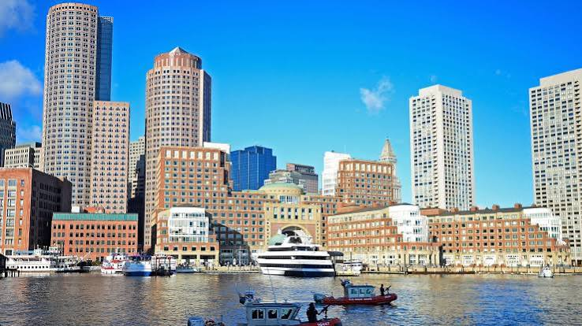

Massachusetts (offiziell Commonwealth of Massachusetts) ist ein Bundesstaat der Vereinigten Staaten von Amerika und Teil von Neuengland.
Der Name Massachusetts ist vom Wort der Massachusett-Sprache [mass-adschu-s-et] abgeleitet und bedeutet ‚beim großen Hügelchen‘ oder ‚beim kleinen, großen Hügel‘, sinngemäß in etwa ‚bei den großen Hügeln‘.
Er bezeichnet sehr wahrscheinlich den Great Blue Hill, einen Hügel im Blue Hills Reservation-State-Park, etwa 15 km südwestlich der Hauptstadt Boston. Die Bezeichnung taucht zum ersten Mal in Captain John
Smiths Buch A Description of New England (1616) auf. Der Beiname von Massachusetts ist Bay State (Staat an der Bucht).
Quellen- und Lizenzhinweis:
Dieser Text basiert auf dem Wikipedia-Artikel
Massachusetts
(geänderte Fassung) und steht unter der Lizenz
Creative Commons Attribution-ShareAlike 4.0 International (CC BY-SA 4.0).
Das Bild ist von
merkur.de